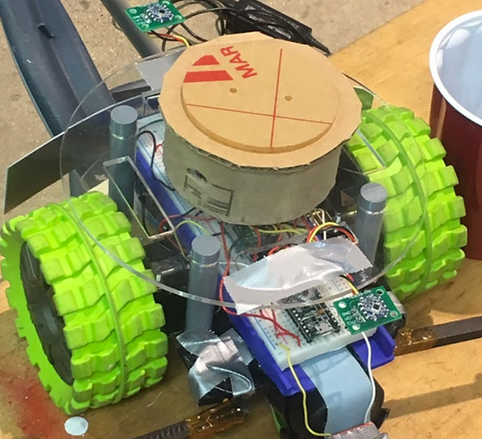

One of my favorite subfields of Mechanical Engineering is Mechatronics, or the interface of mechanical and electrical systems. Since competing in LEGO robotics in elementary school, I've worked on many different projects, some for classes and some just for fun.
-
Mechatronics & Electronics Projects
"Prey" Robot
-
The S'more Machine
(Spring 2016)One of the first mechatronics projects I ever worked on (for a High School Engineering class), this machine does exactly what its name implies: it assembles tasty s'mores.
I came up with the concept and basic design for the machine. Two classmates and I refined the design and built it together.
Demonstration of the S'more Machine
-
Light-Activated Monkey
(Fall 2016)I designed and built this project as a lighthearted jump-scare for a Halloween maze at my church. Unfortunately, the original video (where it is attached to the maze) is lost, but this recreation demonstrates the monkey spinning after the light sensor is tripped.
The project runs on a Teensy 3.2 Arduino and the light threshold can be adjusted for different light levels with a potentiometer.
Demonstration (Left), main board (UR), and light sensor (BR)
-
Hunter/Prey Robotics Competition
(Spring 2017)The basis of this project was to design an autonomous "prey" robot that could flee a piloted "hunter robot" using various sensors, including bump, light, ultrasonic, and VIVE, all running on a Teensy Arduino microcontroller. My largest contributions were designing and building the wheel mounts as well as writing code to control the motors.
"Prey" Robot
-
Motor Control Project (Winter 2019)
(Spring 2016)The goal of this project was to create a fully controllable motor that could be tasked with many different operations, including holding its position at an angle or following a trajectory.
The project ran on a PIC32MX795F12H microcontroller and was controlled via a client in MATLAB.
Motor Control Test
-
Electric Bicycle
(Winter 2020)Although not strictly a mechatronics project, this (perhaps ill-advised) personal project has involved its fair share of wiring and has also taught me lessons about working with higher power DC circuits.
Starting from a replacement motor and control box for a dirt bike, I adapted the system to power my childhood bicycle.
Future steps include moving some of the batteries over the rear wheel to increase traction, adjusting the mount location of the motor to fix derailing issues, and adding accessories like a speedometer and battery meter (perhaps powered by Arduino). Some guarding around the chain and motor might also be a good idea.
The Electric Bike
-
Smart "Watch"
(Spring 2020)The goal of this project was to create a fully functional (but not so wearable) smartwatch powered by a PIC32MX170F256B. Functions include a clock, thermometer, altimeter/gyroscope, input buttons, and LEDs/NeoPixels.
I added a simple obstacle game inspired by the Google T-Rex Run game that includes button-activated jumping, collision detection, and randomly spaced obstacles. I later expanded this into its own project.
Future upgrades to the "watch" could include voice recording/playback, a removable SD card, and a settable alarm.
Inclinometer demonstration (TL), the board (TR), and obstacle game demonstration (Bottom)